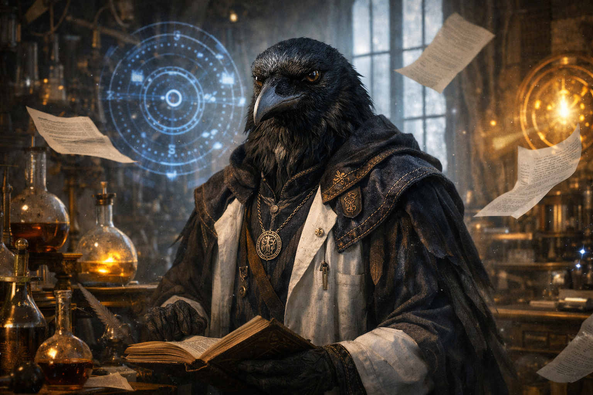
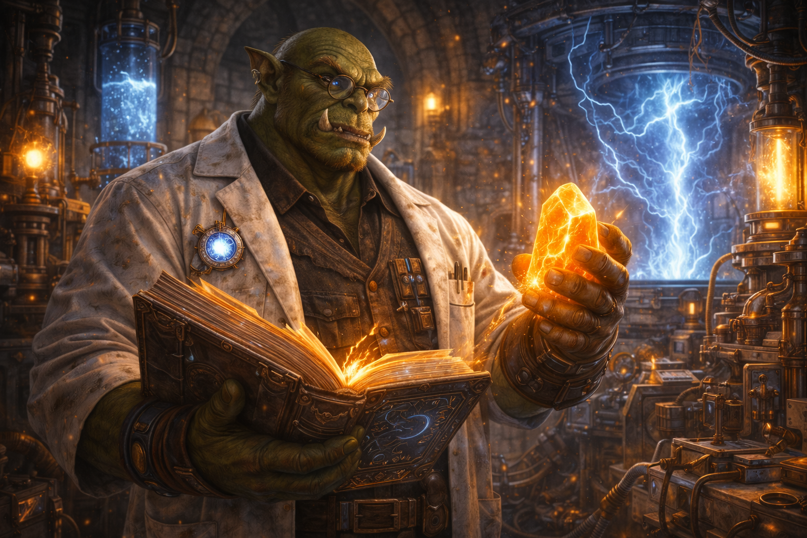
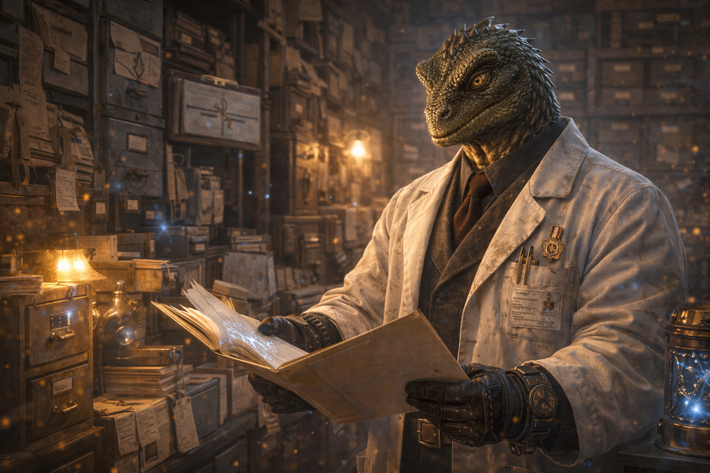
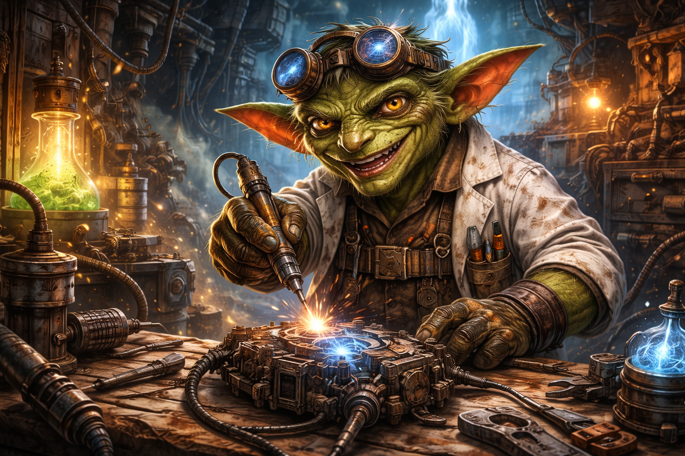

Для НИИХУА разнообразие и равноправие это не просто слова. В Институте трудятся сообща сотрудники самых разных рас и народностей вместе создавая вклад в развитие алхимии.
Люди — самая многочисленная и самая непредсказуемая раса института. Они не обладают врождённой магической специализацией, зато отличаются выдающейся способностью привыкать к чему угодно — от нестабильных экспериментов до отсутствия внятных инструкций.
Люди быстро осваиваются в любой роли, легко меняют специализацию и часто работают в НИИХУА «временно», не замечая, как проходят годы. Они одинаково уверенно чувствуют себя и в лаборатории, и в коридорах власти, и в ситуациях, где никто не понимает, что происходит.
Считается, что именно люди лучше всех умеют делать вид, что всё под контролем, даже когда это явно не так.
Карлики — коренастая, выносливая раса с врождённой тягой к порядку, учёту и структурам. Они ценят стабильность, ясные правила и точные формулировки. В НИИХУА карлики традиционно занимают позиции, связанные с бухгалтерией, учётом ресурсов, инфраструктурой и системным управлением.
Карлики плохо переносят хаос и импровизацию, но отлично работают в долгую. Они помнят старые решения, архивные договорённости и могут восстановить цепочку событий по обрывкам документов.
Карлики редко повышают голос, но способны годами помнить допущенную несправедливость — особенно если она была плохо задокументирована.

Хрономорфы — раса, существующая с постоянным временным смещением. Они могут находиться на несколько минут, часов или даже дней впереди или позади текущего момента. Это не делает их пророками, но создаёт странный эффект: хрономорфы иногда знают, что произойдёт, не понимая, почему.
В НИИХУА хрономорфы часто работают с планированием, прогнозами и экспериментами, связанными со временем. Их отношения с дедлайнами сложны: они могут быть выполнены заранее или уже считаться просроченными ещё до начала работы.
Общение с хрономорфами иногда сбивает с толку — они могут ссылаться на события, которые ещё не случились, или забывать то, что для остальных только что произошло.
Эльварды — высокая, стройная раса с утончёнными чертами и врождённой склонностью к абстрактному мышлению. Их можно узнать по спокойной манере поведения, внимательному взгляду и привычке говорить меньше, чем они знают.
Исторически эльварды связаны с академическими традициями, теорией и методологией. В НИИХУА они занимают позиции исследователей, аналитиков и разработчиков концепций. Именно они чаще всего формулируют «правильные» подходы, которые потом годами пытаются применить на практике.
Эльварды ценят чистоту идей и часто испытывают трудности, сталкиваясь с реальностью института, где компромиссы неизбежны, а идеальные модели редко работают без доработок.

Оркари — крупная, физически мощная раса с клыками и внушительным телосложением. Несмотря на устрашающий внешний вид, оркари в НИИХУА известны как надёжные, дисциплинированные и практичные сотрудники.
Они предпочитают простые, проверенные решения и не любят лишней теории. Оркари часто работают в зонах повышенного риска: охрана, стабилизация экспериментов, обслуживание опасного оборудования. Если что-то нужно удержать, перенести или остановить — зовут оркаров.
Оркари не склонны к долгим рассуждениям, но обладают развитым чувством ответственности и чётко различают, что «работает», а что нет.

Рептилоиды — чешуйчатая, хладнокровная раса с вертикальными зрачками и спокойной, почти отстранённой манерой общения. Они живут значительно дольше большинства других рас и привыкли мыслить в масштабах десятилетий и столетий.
В НИИХУА рептилоиды традиционно занимают позиции, связанные с архивами, аудитом, контролем соответствия и долгосрочным планированием. Они ценят регламенты, процедуры и устойчивые системы, которые не зависят от личных амбиций.
Рептилоиды редко проявляют эмоции и почти никогда не торопятся. Их фраза «это уже происходило» обычно означает, что стоит отнестись к ситуации серьёзно.

Гоблиноиды — невысокая, суетливая и крайне изобретательная раса. Их легко узнать по постоянному движению, испачканным рукам и склонности разбирать и собирать любые механизмы поблизости.
В НИИХУА гоблиноиды работают техниками, инженерами и младшими специалистами. Именно они чаще всего придумывают решения «на коленке», которые внезапно оказываются самыми живучими. Их изобретения не всегда выглядят аккуратно, но обычно выполняют свою функцию.
Гоблиноиды не любят, когда их просят «сделать красиво». Они предпочитают, чтобы всё просто работало — желательно прямо сейчас.
Отдел занимается исследованиями, результат которых невозможно заранее предсказать, но невозможно не попробовать. Здесь тестируют новые формулы, смешивают несовместимое и регулярно превышают допустимые нормы магической активности.
Эксперименты отдела часто выходят из-под контроля, но именно отсюда выходят самые громкие открытия НИИХУА. В праздничные дни отдел официально закрыт, но по факту — никогда.
Руководитель может мгновенно ускорить любой магический или технический процесс, игнорируя подготовку и требования безопасности.
Эффект: Один раз за игру может воспроизвести неудачный эксперимент заново.
Цена: мастер добавляет побочный эффект на бросок кубика
«Да, это сработало. Вопрос — что именно.»
Этот отдел отвечает за модели, теории, формулы и объяснения того, что делают остальные. Сотрудники отдела уверены, что если что-то нельзя корректно описать, то этого либо не существует, либо это временно.
Методологии отдела редко совпадают с практикой, но без них невозможно отчитаться перед Советом Архимагов.
Руководитель может отменить или переписать эффект, доказав, что он не должен существовать.
Эффект: отменяет магический эффект, существо или аномалию; или снижает сложность сложного действия на -5
Условие: игрок обязан логически или псевдонаучно объяснить, почему это не может работать
«Если следовать формуле, этого просто не произошло.»
Самый влиятельный и самый ненавидимый отдел института. Здесь разрабатывают формы, процедуры, протоколы и правила, которые позволяют НИИХУА существовать в правовом поле магического мира.
Любое действие без согласования считается нарушением. Любое согласование — приключением.
Руководитель может узаконить любое действие, даже запрещённое или абсурдное.
Эффект: любое действие считается официально допустимым; проверяющие и системы принимают его как норму
Цена: требуется оформить «временный протокол»; позже кто-то потребует отчёт или объяснение
«Это не нарушение. Это исключение.»
Отдел обслуживает, чинит и модернизирует древние и современные магические устройства института. Никто точно не знает, как работают некоторые артефакты, но этот отдел знает, что с ними делать, когда они перестают работать.
Сотрудники отдела считают, что главная проблема НИИХУА — пользователи.
Руководитель может запустить или починить любой артефакт, даже если никто не знает, как он устроен.
Эффект: объект работает ровно так, как нужно в моменте; можно игнорировать поломки и несовместимость
Ограничение: эффект временный; после сцены объект снова нестабилен или требует внимания
«Не спрашивайте как. Просто не трогайте.»
Отдел отвечает за переговоры: с магическими существами, с разумными экспериментами, с проверяющими, иногда — с самими зданиями.
Здесь решают проблемы словами, интонациями и правильно подобранными обещаниями.
Руководитель может перевести любой конфликт в диалог, даже если это: агрессивное существо, враждебная система, проверяющий.
Эффект: бой, проверка или конфликт временно останавливается; появляется возможность договориться или сменить условия
Условие: договор всегда обязывает обе стороны; мастер вправе потребовать услугу взамен
«Он не злой. Он просто выполняет свою функцию.»
Отдел занимается оценкой рисков, предсказанием последствий и подготовкой планов «на случай если». Именно здесь хранятся сценарии катастроф, которые, к сожалению, регулярно оказываются актуальными.
Отдел редко бывает услышан до тех пор, пока не становится поздно.
Руководитель может предсказать ближайшее развитие ситуации.
Эффект: мастер обязан честно рассказать: что случится при успехе; что случится при провале; игроки могут изменить решение после этого
Ограничение: не даёт идеального исхода; только ясность последствий
«Плохая новость — это не худший сценарий.»
Этот отдел выезжает туда, где уже что-то пошло не так. Он отвечает за локализацию последствий, эвакуацию персонала и временные решения, которые потом почему-то становятся постоянными.
Сотрудники отдела первыми сталкиваются с проблемами и последними уходят домой.
Руководитель может сдержать любую катастрофу, не решая её полностью.
Эффект: взрыв, прорыв, паника, проверка — останавливаются; ущерб минимизируется; появляется время подумать
Цена: ситуация никуда не исчезает; её придётся решать позже или обходить
«Живы? Отлично. Работаем дальше.»